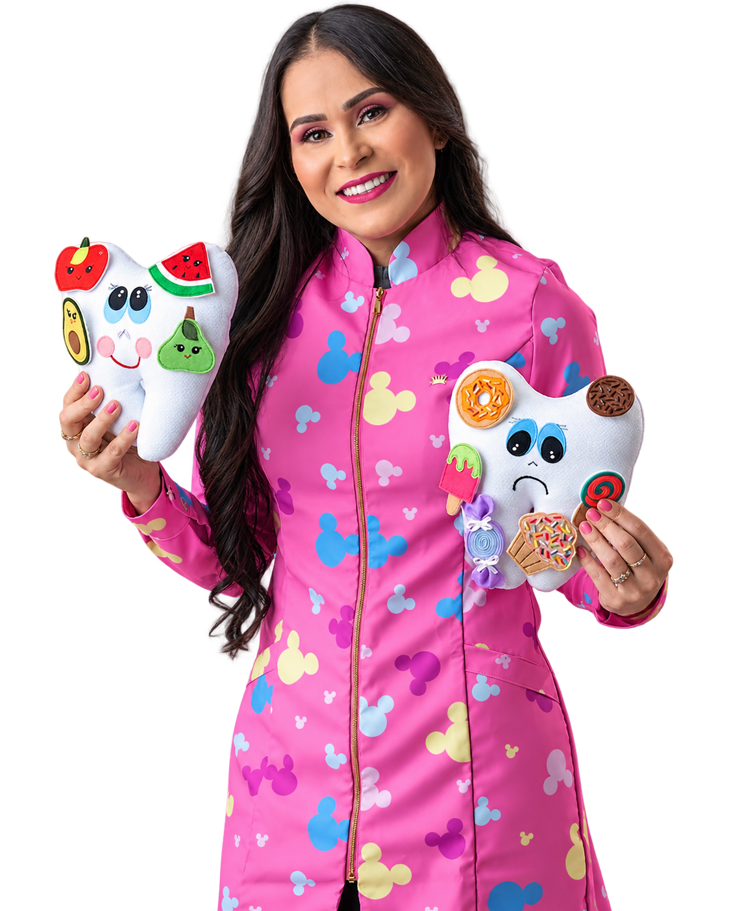

Odontopediatria
Cuidado odontológico especializado e acolhedor para bebês, crianças e adolescentes.
Na Clínica Amalos, em Euclides da Cunha, cada sorriso e cada história recebem um cuidado completo — do dentinho de leite ao bem-estar de toda a família, com carinho, respeito e atenção individual.

A Clínica Amalos nasceu para ser muito mais do que uma clínica "de um assunto só". Aqui, cuidamos da saúde da sua família em diversas frentes — do sorriso ao bem-estar emocional, do desenvolvimento infantil à autoestima — tudo em um só lugar, com o mesmo carinho de sempre.
Sob a direção técnica da Dra. Edivânia Barboza (Odontopediatria, CROBA 20706), reunimos uma equipe de especialistas dedicados a oferecer um atendimento humano, atencioso e verdadeiramente integrativo para todas as idades.
Uma equipe completa de especialistas, reunida para cuidar de vocês com atenção e dedicação.
Cuidado odontológico especializado e acolhedor para bebês, crianças e adolescentes.
Aparelhos e tratamentos para um sorriso alinhado e saudável, com acompanhamento próximo.
Acompanhamento do crescimento e desenvolvimento infantil com muito cuidado e atenção.
Estímulo à fala, linguagem e funções orais em todas as fases da vida.
Espaço de escuta e acolhimento para cuidar da saúde emocional de cada paciente.
Procedimentos estéticos faciais com segurança, naturalidade e cuidado individual.
Cuidados especializados com a saúde do couro cabeludo e dos cabelos.
Atendimento clínico completo para cuidar da saúde de toda a família.
Sabemos que cada paciente é único, e por isso nosso atendimento é sempre respeitoso, individual e sem pressa. Preparamos nosso ambiente e nossa equipe para acolher com sensibilidade cada necessidade específica — incluindo pacientes que precisam de uma abordagem mais cuidadosa e personalizada.
Nossos especialistas atendem em dias específicos da semana. Confira abaixo um exemplo de organização e fale com a gente para confirmar o dia certo para sua especialidade.
Odontopediatria · Clínico Geral
Ortodontia · Pediatria
Fonoaudiologia · Psicologia
Odontopediatria · Tricologia
Cirurgia Plástica / Estética Facial
Plantão sob agendamento
📅 A agenda pode variar. Chame no WhatsApp para confirmar o melhor dia e horário para o seu especialista.
Avaliações reais de pacientes no Google.
★★★★★MMaria Jeane Reis Cabral"A Clínica Amalos é referência quando o assunto é atendimento humanizado. Fiquei impressionada com o cuidado dedicado aos pacientes especiais e com a forma tranquila e segura como a sedação é conduzida. Tudo é feito com muito planejamento, acolhimento e respeito ao tempo de cada criança, transmitindo confiança e tranquilidade para toda a família. É emocionante ver profissionais que unem conhecimento técnico, tecnologia e tanto amor pelo que fazem. Super recomendo!"
★★★★★LLucas de Jesus Santos"Gostei muito do local, atendimento nota dez, super indico. Melhor atendimento, já começa na recepção. A Dra. Edivânia Barboza é uma das melhores médicas, esclarecimento total, usa as melhores palavras. Os pais que levarem seus filhos na Clínica Amalos não vão se arrepender. Mais uma vez muito obrigado!"
★★★★★LLarissa Santos"Excelente atendimento! Fiquei muito satisfeita com o cuidado com o meu filho, a atenção e o profissionalismo. A Dra. Edivânia foi muito atenciosa, explicou tudo com muita clareza e me deixou muito à vontade. Mesmo sendo necessário realizar o procedimento com sedação, tudo foi conduzido com muito cuidado, segurança e tranquilidade. Super recomendo!"
★★★★★BBianca da Silva Jesus"Excelente atendimento! Um trabalho realizado com muito profissionalismo, carinho e dedicação. O atendimento é humanizado, proporcionando cuidado, acolhimento e respeito às crianças e suas famílias. Super recomendo!"
Agende agora sua consulta e venha sentir o cuidado da Clínica Amalos de perto.
Agendar minha consulta